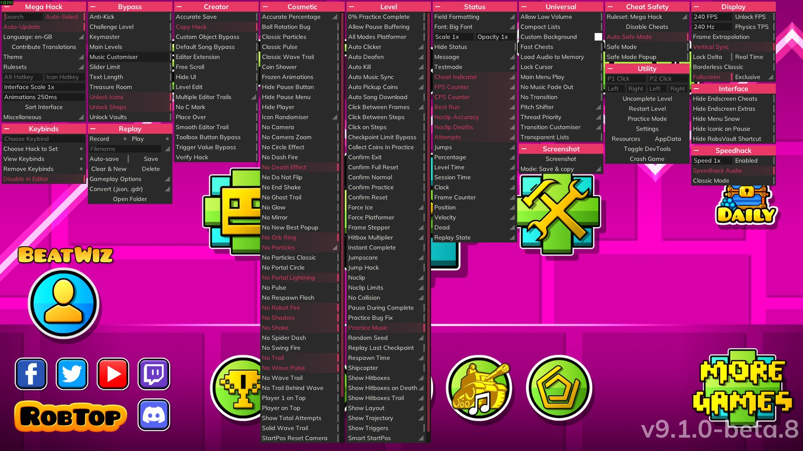

документация · v9.1.0-beta.8
Установка и настройка
Сначала Geode, потом установщик .exe, потом меню по Tab. Установщик кладёт в Geode файл .geode — отдельных DLL и инжекторов у мода нет.
01 — установка
Установка
-
01
Проверь версию игры
Нужна Geometry Dash
2.2081. Под другие версии сборок нет: мод обновляется вместе с игрой. -
02
Поставь Geode
Установщик лежит на geode-sdk.org. Он сам находит папку игры, после запуска в главном меню появляется кнопка Geode.
-
03
Скачай установщик
Установщик Mega Hack, файл
.exe— на странице Скачать или в Telegram. Это один и тот же файл, зеркал нет. -
04
Запусти установщик
Он сам находит папку игры и кладёт
.geodeвgeode/mods. Если папка не нашлась — укажи её вручную.Путь на Windows: Steam → ПКМ по Geometry Dash → «Управление» → «Просмотреть локальные файлы».
-
05
Включи мод и открой меню
Запусти игру → Geode → Mods → Mega Hack должен быть в списке и включён. Меню:
Tabна Windows, плавающая иконка на Android. Работает и в главном меню, и в уровне.
.geode в geode/mods. Отдельных DLL и инжекторов у Mega Hack v9 нет.
02 — меню
Меню и настройки
-
01
Открой меню
Tabна Windows или плавающая иконка Mega Hack на Android. Меню открывается и в главном меню, и в уровне — это одно и то же меню. -
02
Выбери вкладку
Их 13: Bypass, Creator, Cosmetic, Level, Status, Universal, Cheat Safety, Display, Keybinds, Replay, Utility, Interface, Speedhack.
-
03
Включи нужное
Настройки применяются сразу, кнопки «Сохранить» нет: всё пишется в конфиг мода само.
-
04
Настрой Keybinds
Вкладка Keybinds назначает горячие клавиши на любую функцию, чтобы не открывать меню посреди попытки.
-
05
Safe Mode в Cheat Safety
Safe Mode не даёт читам попасть в прогресс и лидерборды: уровень с включённым режимом не засчитывается. Auto Safe Mode включает его сам, Popup — спрашивает перед уровнем.
-
06
Speedhack и Display
Speedhack — множитель скорости, звук и Classic Mode. Display — 240 FPS, Physics TPS и Frame Extrapolation для высокого FPS.

03 — ошибки
Ошибки
Что проверить
-
01
Установщик доработал до конца
Если он выдал ошибку или закрылся на середине, мод не встал. Запусти ещё раз и укажи папку игры вручную.
-
02
Geode установлен
В главном меню должна быть кнопка Geode. Если её нет — загрузчик не встал: переустанови, указав папку игры вручную.
-
03
Версия игры 2.2081
На другой версии мод не загрузится — Geode скроет его из списка.
-
04
Установщик докачался целиком
Если браузер сохранил страницу вместо .exe, файл будет весить пару килобайт. Перекачай с сайта или из Telegram.
Что проверить
-
01
Мод включён
Geode → Mods → Mega Hack. Выключенный мод не грузится, даже если файл на месте.
-
02
Tab никто не перехватывает
Оверлеи Discord, Steam и стриминговые утилиты могут забирать Tab. Закрой их и проверь снова.
-
03
Android — это иконка
На Android меню открывается плавающей иконкой Mega Hack, клавиши Tab там нет.
-
04
Geode не в Safe Mode
Если игру запускали с зажатым
Shift, Geode не грузит моды. Перезапусти игру обычным способом.
Что проверить
-
01
Отключи другие моды
Конфликт двух модов — частая причина вылета. Оставь только Mega Hack и включай остальные по одному.
-
02
Обнови Geode
Старый загрузчик не тянет новые моды. Поставь актуальную версию поверх.
-
03
Проверь версию игры
GD должна быть 2.2081 — Mega Hack собирается под неё.
-
04
Запусти Geode Safe Mode
Зажми
Shiftпри запуске игры: моды не загрузятся. Если так игра работает — проблема в моде или конфликте, а не в самой игре.